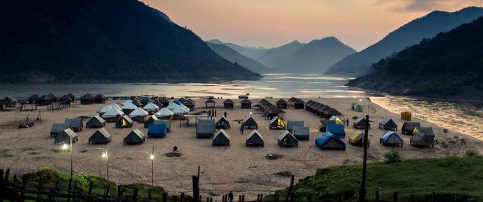
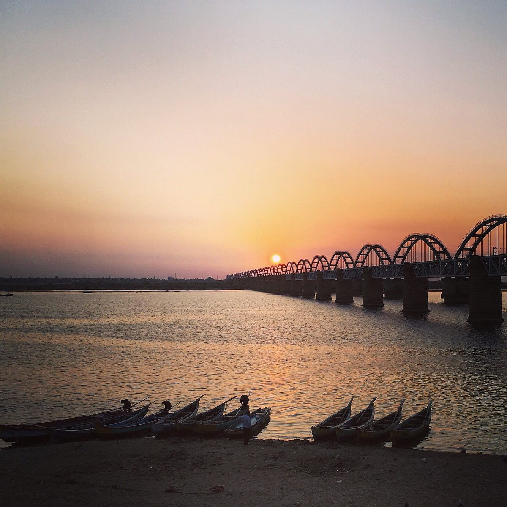
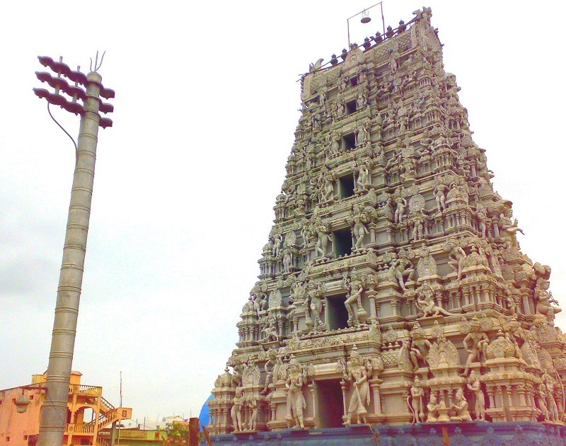

Welcome to My Hometown!
My hometown is a small town located in the countryside. It has a rich history and is known for its natural beauty and landmarks. Here are some of the notable landmarks and attractions in my hometown:
| Landmarks | Description | Image |
|---|---|---|
| Papikondalu | Papikonda National Park is a national park in India, located near Rajamahendravaram in the Papi Hills of the Alluri Sitharama Raju and Eluru districts of Andhra Pradesh, and covering an area of 1,012.86 km2 (391.07 sq mi).[1][2] It is an Important Bird and Biodiversity Area and home to some endangered species of flora and fauna.[3] No part of Papikonda remains outside East and West Godavari districts after 2014 and the construction of Polavaram Dam. |  |
| Godavari Bridge | The Godavari bridge is 4.1 kilometers (2.8 km Rail part & 4.1 km Road part) long consisting of 27 spans of 91.5 m and 7 spans of 45.72 m of which 6 spans of 45.72m are in 6 deg. curve at long Rajahmundry end to make up for the built up area. The bridge has a road deck over the single track rail deck, similar to the Grafton Bridge in New South Wales, Australia. This bridge, in addition to Godavari Arch Bridge, has been widely used to represent Rajahmundry in arts, media, and culture. It is one of the recognised symbols of Rajahmundry.[2] |  |
| Temple | The main contribution for temple construction was made by the King Chalukya Bheema I during 10th century. The Shiva lingam is called Someshwara as it is believed that this lingam has been installed by Lord Chandra. The color of the linga is believed to change according to the Lunar rays. In Full Moon days it changes into white and during Amavasya day, it turns into black in form. |  |
Aside from the landmarks, my hometown is also known for its annual festivals and events. The most popular ones are the Harvest Festival in the fall and the Christmas Market in the winter.